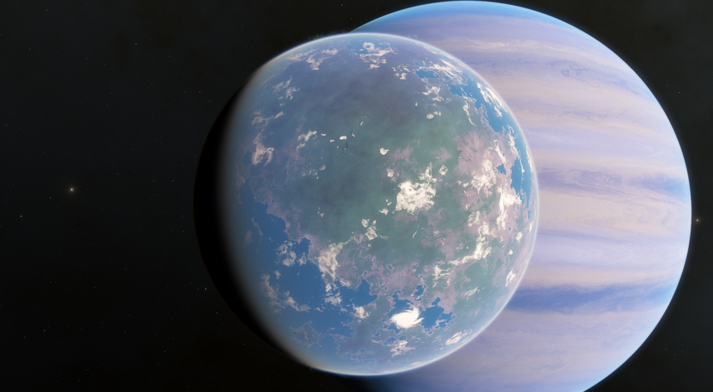
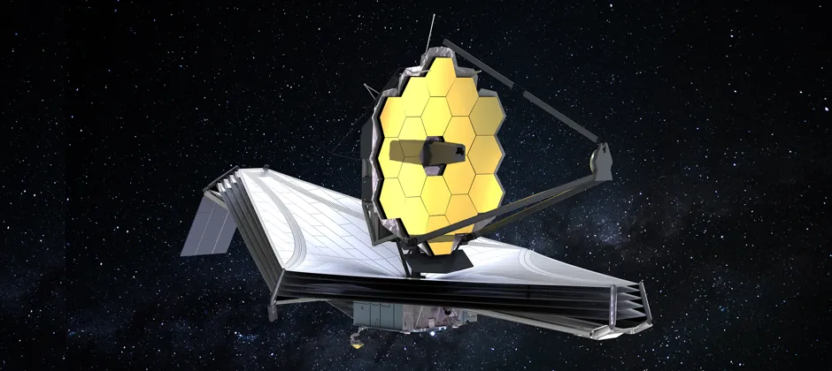

Exploring the Possibilities of Alien Life
The search for extraterrestrial life has intrigued scientists and the public alike for decades. From microbial organisms to intelligent civilizations, the universe holds endless possibilities for the forms life could take. Recent advancements in astrobiology and technology allow us to explore these possibilities with more depth than ever before.
In 2021, researchers discovered phosphine in Venus's clouds, sparking debates about microbial life on our neighboring planet. Mars, too, remains a focus, as scientists investigate its past potential for hosting liquid water. The moons of Jupiter and Saturn, particularly Europa and Enceladus, have become prime candidates for life due to their subsurface oceans and geothermal activity.
Our search expands beyond our solar system with the use of powerful telescopes that detect exoplanets. Scientists use spectral analysis to study the atmospheres of these distant worlds, looking for chemical signatures that might indicate biological processes. The James Webb Space Telescope, launched in 2021, continues to provide unprecedented data that could bring us closer to confirming the presence of life elsewhere in the cosmos.
The question remains: are we alone in the universe? While the answer may take decades or centuries to uncover, each discovery adds a piece to the puzzle, guiding humanity toward a greater understanding of our place in the cosmos.